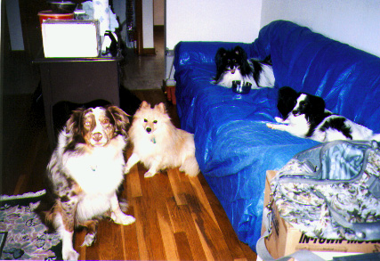

This is an inline image, with an image map. The image below is included in this document as an inline image. Each of the four dogs has a hotspot associated with him or her. The shape, size, and location of each hotspot is defined in an <area> tag within an image map (defined by the <map> tag). Two of the dogs have links to other web pages associated with their hotspots - clicking on one of them will take you to that web page.

This image map was created using the graphical editor Amaya. Creating a map by hand in a text editor could be rather difficult. Look at the source of this page (image-map1.html) to see how the hotspots were created by specifying points on an x,y coordinate plane.